Here, we cover some of the widely used charts. To decide what kind of chart we will use, besides the type of the data we want to plot, we consider three things: purpose (exploration or presentation), effectiveness, and scalability.
Please note that most of the examples are taken directly from R Graph Gallery or modified slightly. To learn more about different charts, please have a look at the website.
5.1 Histogram / Density Plots
data <-read.table("https://raw.githubusercontent.com/holtzy/data_to_viz/master/Example_dataset/1_OneNum.csv", header =TRUE) %>%filter(price <300)p1 <- data %>%ggplot(aes(x = price)) +geom_histogram(binwidth =15, fill ="#69b3a2", color ="#e9ecef", alpha =0.9) +ggtitle("Histogram")p2 <- data %>%ggplot(aes(x = price)) +geom_density(fill ="#69b3a2", color ="#e9ecef", alpha =0.8) +ggtitle('Density Plot')ggarrange(p1, p2, labels ='auto')
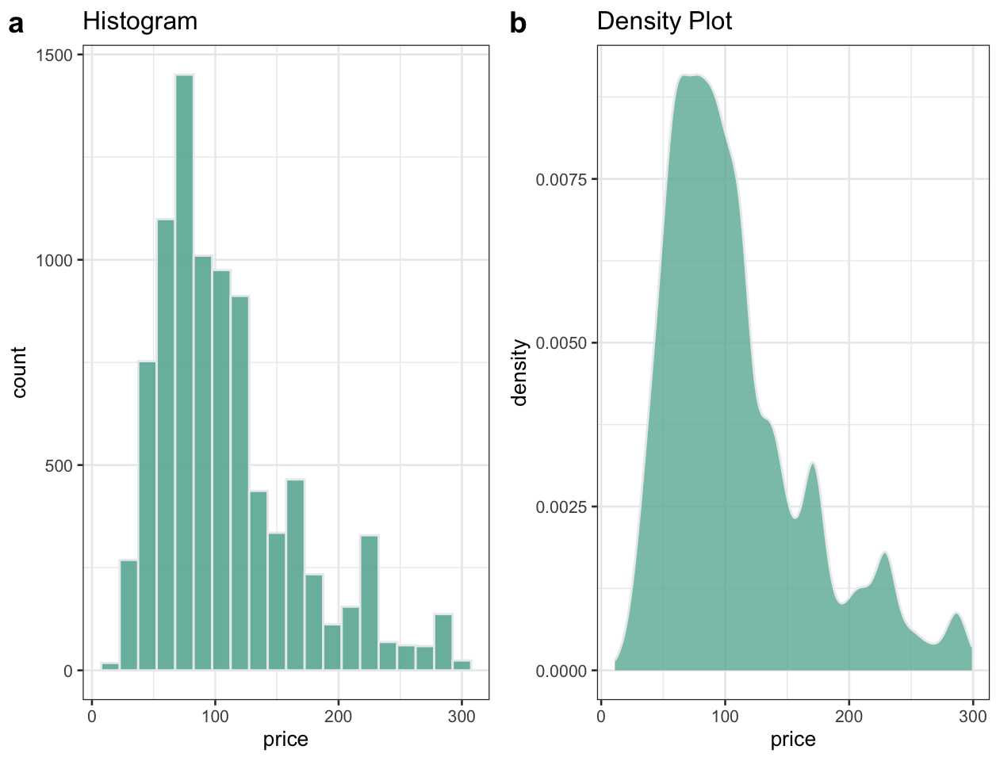
Purpose: Both exploration and presentation
Effectiveness: Good
Scalability: Poor (Good if we have just one category but it becomes difficult to plot multiple categories at once. except: see ggridges package)
Notes: One of the biggest issues with histograms / density plots is choosing the ‘correct’ number of bins / binwidth. For example, in the following plot, the same data is plotted using four different choices of bins and some of these could be misleading if the binsize is not chosen objectively.
x1 <- data %>%ggplot(aes(x = price)) +geom_histogram(binwidth =3, fill ="#69b3a2", color ="#e9ecef", alpha =0.9) +ggtitle("Bin size = 3")x2 <- data %>%ggplot(aes(x = price)) +geom_histogram(binwidth =15, fill ="#69b3a2", color ="#e9ecef", alpha =0.9) +ggtitle("Bin size = 15")x3 <- data %>%ggplot(aes(x = price)) +geom_histogram(binwidth =30, fill ="#69b3a2", color ="#e9ecef", alpha =0.9) +ggtitle("Bin size = 30")x4 <- data %>%ggplot(aes(x = price)) +geom_histogram(binwidth =100, fill ="#69b3a2", color ="#e9ecef", alpha =0.9) +ggtitle("Bin size = 100")ggarrange(x1, x2, x3, x4, ncol =2, nrow =2)
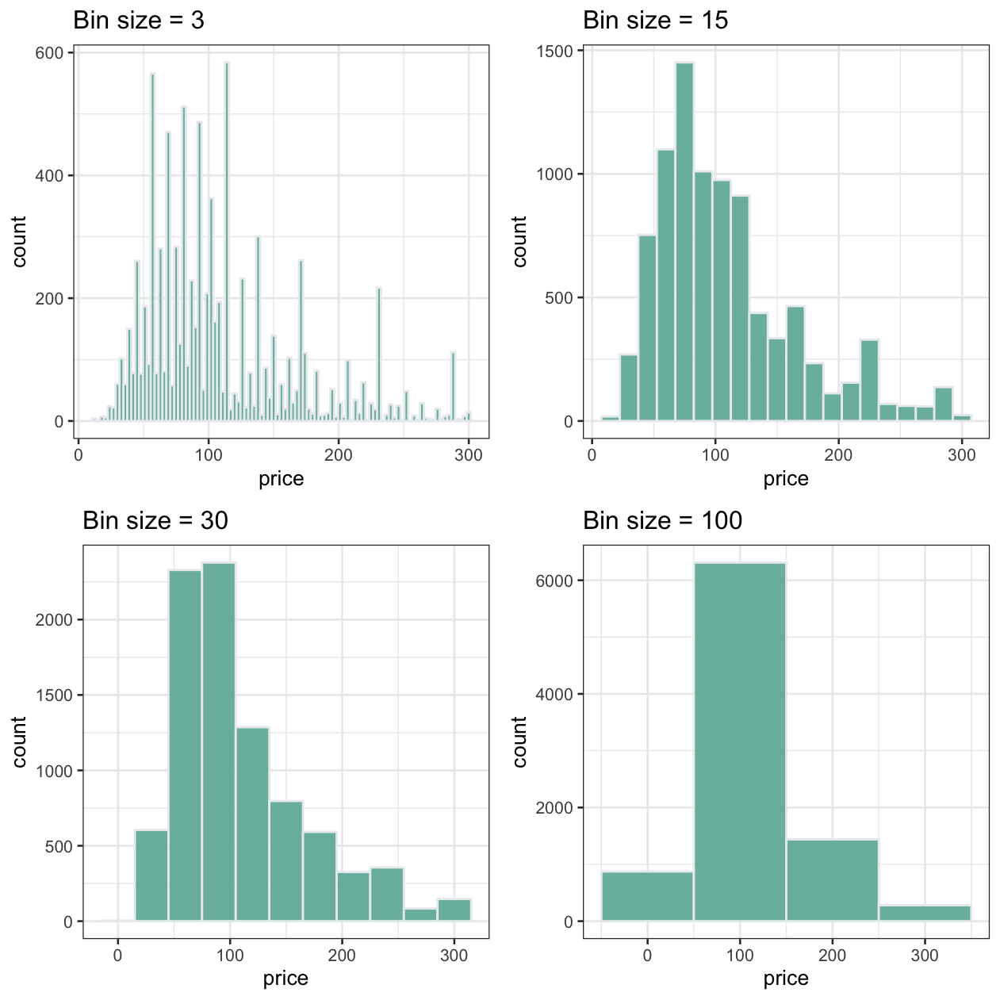
5.2 Boxplots
Another plot types that makes comparison of multiple groups easier is boxplots.
Purpose: Presentation (Not good for exploration because the data is hidden)
Warning: The `<scale>` argument of `guides()` cannot be `FALSE`. Use "none" instead as
of ggplot2 3.3.4.
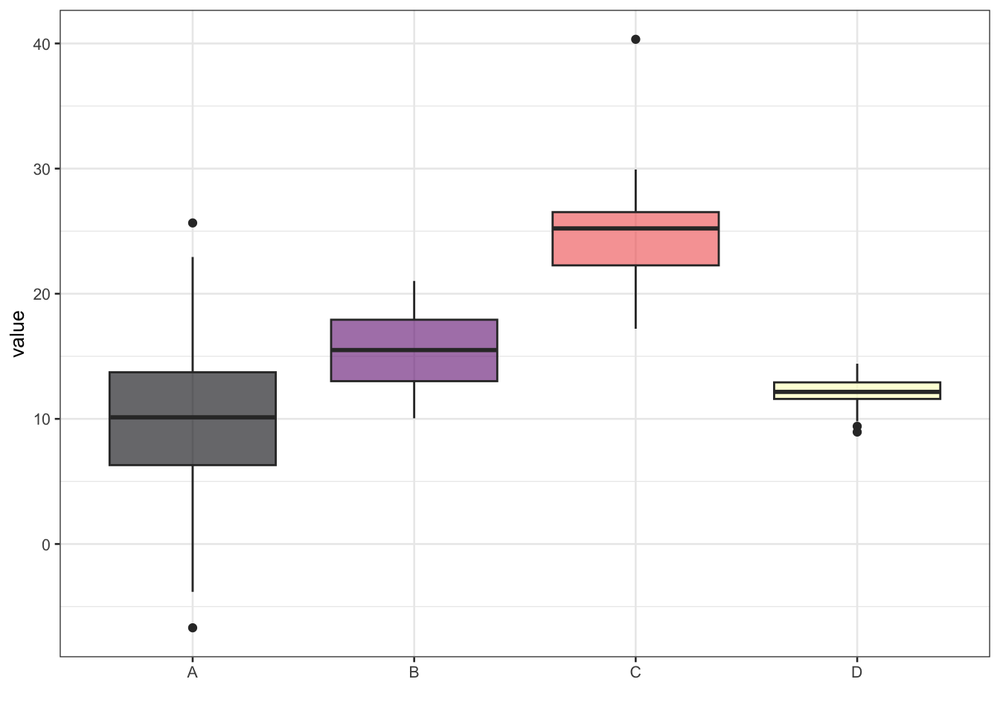
Notes: Note that boxplot summarizes the distribution and actually hides the data. See the next plot for exact distribution:
data %>%ggplot(aes(x = name, y = value, fill = name)) +geom_boxplot(outlier.shape =NA) +scale_fill_viridis(discrete =TRUE, alpha =0.6, option ="A") +geom_jitter(color ="black", size =0.2, alpha =0.9) +xlab("") +guides(fill =FALSE)
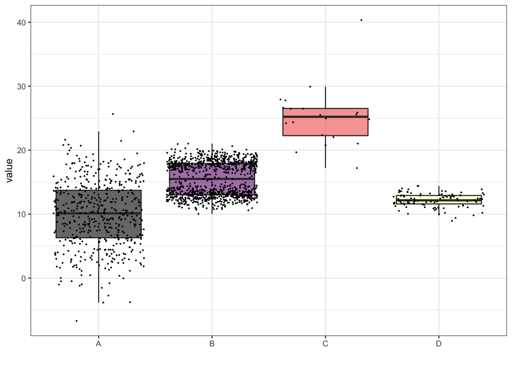
Here it is clear that distribution of category B is bimodal and it is not possible to understand this unless we use geom_jitter to project data points. A potential problem with using geom_jitter, however, is that it decreases the scalability (if the number of data points increases, it is not possible to see anything).
5.3 Violin Plot
Violin plot overcomes the scalability issues in histograms and boxplots with jitter.
Purpose: Both exploration and presentation
Effectiveness: Good
Scalability: Good
data %>%ggplot(aes(x = name, y = value, fill = name)) +geom_violin() +scale_fill_viridis(discrete =TRUE, alpha =0.6, option ="A") +xlab("") +guides(fill =FALSE)
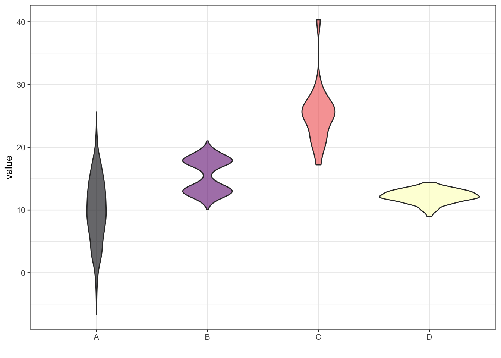
Notes: The number of data points is hidden in violin plots. Especially if the number of data points is low, or different between categories, it is important to annotate the figure with the numbers.
5.4 Bar plot
Bar plots are generally used for comparisons.
Purpose:Presentation
Effectiveness:Good
Scalability:Good
data <- iris %>%select(Species, Sepal.Length)my_sum <- data %>%group_by(Species) %>%summarise(n =n(),mean =mean(Sepal.Length),sd =sd(Sepal.Length) ) %>%mutate(se = sd /sqrt(n),ic = se *qt((1-0.05) /2+ .5, n -1) )ggplot(my_sum) +geom_bar(aes(x = Species, y = mean), stat ="identity", fill ="forestgreen", alpha =0.5) +geom_errorbar(aes(x = Species, ymin = mean - sd, ymax = mean + sd), width =0.4, colour ="orange", alpha =0.9, size =1.5)
Warning: Using `size` aesthetic for lines was deprecated in ggplot2 3.4.0.
ℹ Please use `linewidth` instead.
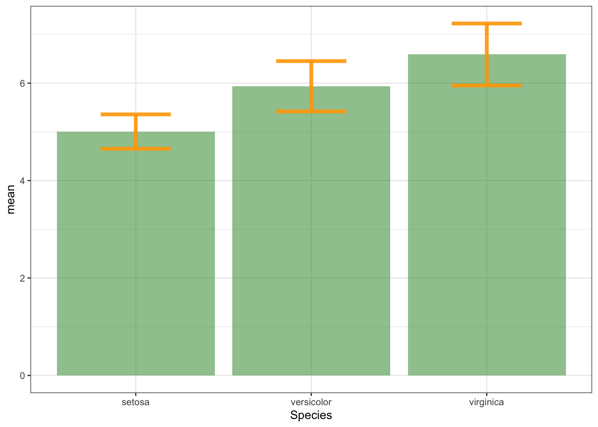
Notes:The major problem with the barplots is that it hides the data and people generally don’t think much about what they plot using error bars (could be sd, SE, confidence interval etc. - but each should be interpreted differently).
psd <-ggplot(my_sum) +geom_bar(aes(x = Species, y = mean), stat ="identity", fill ="forestgreen", alpha =0.5) +geom_errorbar(aes(x = Species, ymin = mean - sd, ymax = mean + sd), width =0.4, colour ="orange", alpha =0.9, size =1.5) +ggtitle("using standard deviation")pse <-ggplot(my_sum) +geom_bar(aes(x = Species, y = mean), stat ="identity", fill ="forestgreen", alpha =0.5) +geom_errorbar(aes(x = Species, ymin = mean - se, ymax = mean + se), width =0.4, colour ="orange", alpha =0.9, size =1.5) +ggtitle("using standard error")pci <-ggplot(my_sum) +geom_bar(aes(x = Species, y = mean), stat ="identity", fill ="forestgreen", alpha =0.5) +geom_errorbar(aes(x = Species, ymin = mean - ic, ymax = mean + ic), width =0.4, colour ="orange", alpha =0.9, size =1.5) +ggtitle("using confidence interval")ggarrange(psd, pse, pci, ncol =3)
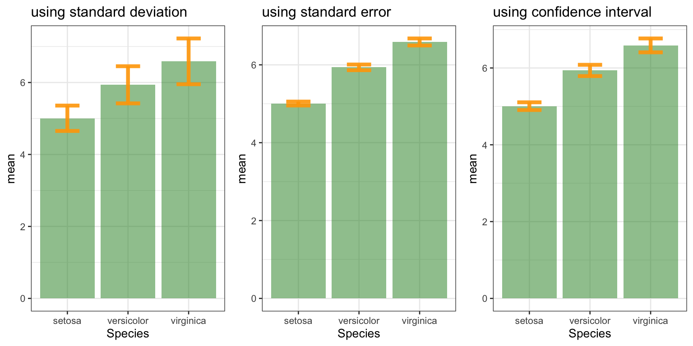
5.5 Stripchart
One way to overcome the issues with barplot is to use stripchart.
Purpose:Both for exploration and presentation
Effectiveness:Good
Scalability:Bad (both increasing the number of categories and the numbers decreases the effectiveness)
Notes:It is important to pay attention where the baseline is. Sometimes there is no pre-defined baseline (panel a). However, if there is a baseline of 0, for example, then the same data would reflect that although there is a difference in different species, the effect is not that big.
To show changes in one variable, with respect to another one, we use lineplot.
Purpose:Both exploration and presentation
Effectiveness:Good
Scalability:Bad (incrase in the number of categories decreases effectiveness)
data <-read.table("https://raw.githubusercontent.com/holtzy/data_to_viz/master/Example_dataset/3_TwoNumOrdered.csv", header =TRUE)data$date <-as.Date(data$date)data %>%tail(10) %>%ggplot(aes(x = date, y = value)) +geom_line(color ="grey") +geom_point(shape =21, color ="black", fill ="#69b3a2", size =3) +ggtitle("Evolution of bitcoin price")
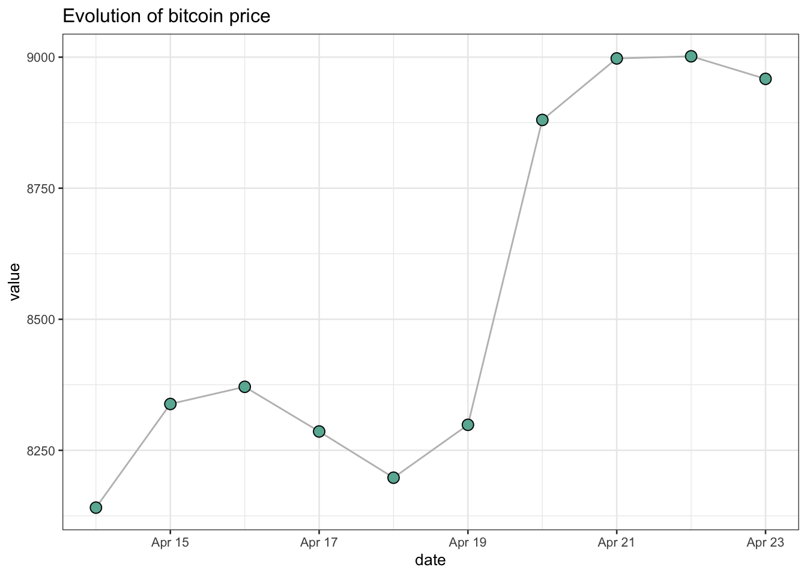
Notes:It is important to note that the line between points implies a connection & evolution. So, lineplot should be used for continuous or ordinal data.
5.7 Scatterplot
To plot the relationship between two variables we use scatterplots.
Purpose:Both for exploration and presentation
Effectiveness:Good
Scalability:Intermediate (increased number of data points will not be distingueshed after some point because of high overlap)
Notes:An important aspect to consider is the axes ratio. Note that both of the following figures are showing the same data:
p1
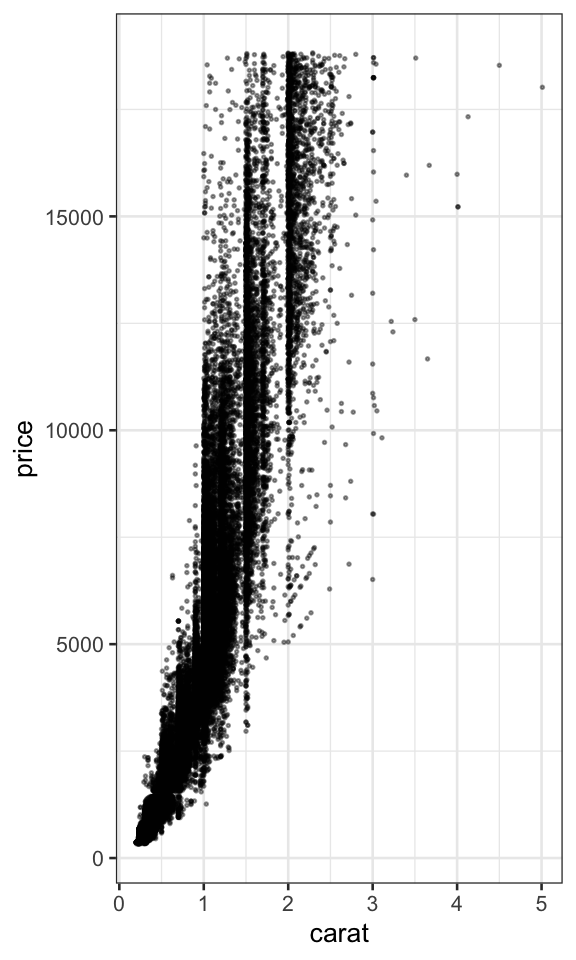
p1
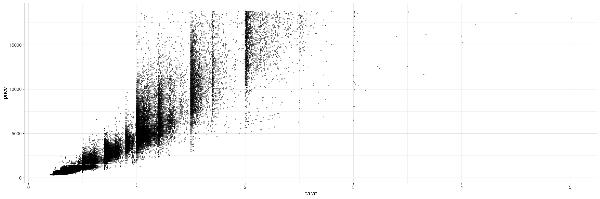
5.8 Density 2D (Hex) Plot
A way to overcome the issue with scalability in scatterplot is using hex-plots. Basically it bins data into hexagons and fills the hexagons by the number of data points in it.
Purpose:Both for exploration and presentation
Effectiveness:Good
Scalability:Good
diamonds %>%ggplot(aes(x = carat, y = price)) +geom_hex(bins =100) +scale_fill_viridis_c()
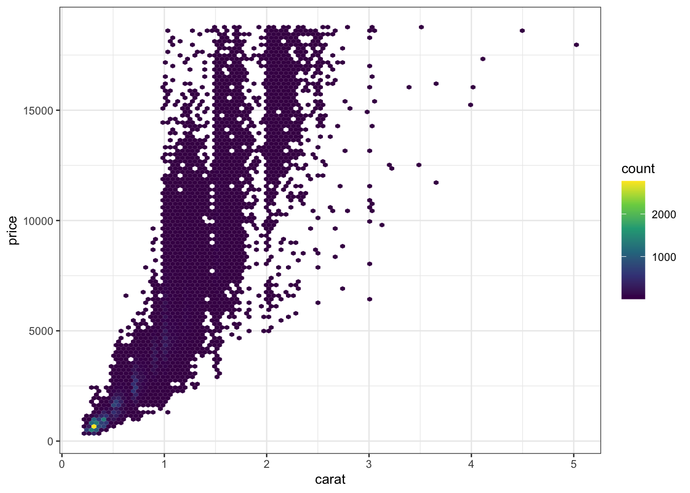
Note that the distribution of number of data points in hexagons are actually not linear. Using a logarithmic transformation, we can visualise smaller changes better (if this is what we should be focusing on), however, it is very important to change the legend to make sure log2 transformation is reflected.
Scatter or hexplot is good to see the relationship between two variables. However, if we have more variables then we can use a summarization and plot the correlations as correlograms.
Notes:It is important to make sure the underlying scatterplots are checked even though they are not presented!
Another alternative is to use ‘ggpairs’ function in GGally, which summarises the data, correlations and also plots the scatterplots. However, the scalability is low as it is only possible to use it for a limited number of variables: